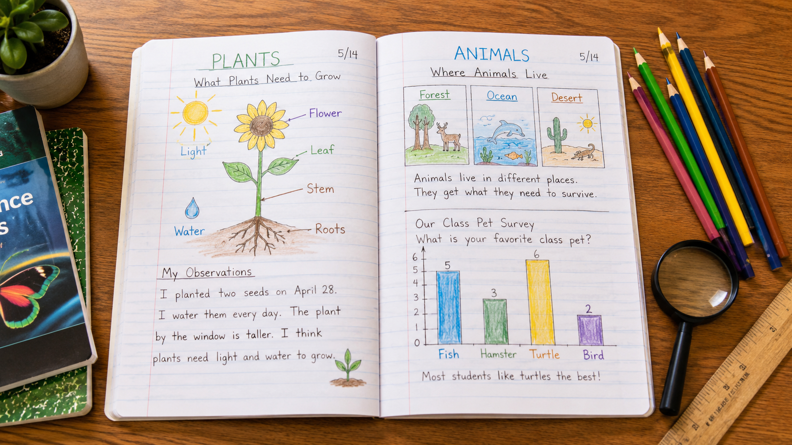

This is your final investigation. Time to show what you know.
Start here. Learn the words you will use today.
Look at the photo below. It shows a real mountain meadow — the kind of place a park scientist might study. Before you read anything else, just look.
Good science questions start with how, why, or what happens when. Try to write a question like that.
These words describe how scientists think. You've been doing all of this work all year. Tap each card to flip it.
Copy this sentence carefully into your science notebook:
"A scientist asks a question, collects evidence, looks for patterns, and explains what they found."
Now learn the main science idea.
All year, you've been building science skills — one lesson at a time. You measured weather. You tested forces. You studied life cycles, traits, and ecosystems. You even designed solutions to real problems.
Today you put all of those pieces together. This is your chance to pick a question and investigate it on your own.
Here's what you've learned, organized into five big areas. Tap the diagram below to explore each one.
Scientists ask questions, collect evidenceEvidenceInformation from observations or data that helps answer a science question., find patternsPatternSomething that repeats or happens in a regular, predictable way., and explain what they found. You've been doing exactly that — all year long.
Curious? Go Deeper
Real scientists don't work alone. They share their findings, ask each other questions, and build on each other's work. Every investigation you did this year followed the same basic steps that professional researchers use.
The biggest difference between a 3rd grader and a professional scientist isn't the equipment — it's practice. Scientists have been asking questions and collecting evidence for years. And you've been doing it all year. That's a real start.
Now test the idea yourself.

Your job: Choose ONE scenario from the box below. Then work through the investigation steps in your notebook.
Pick Your Scenario
Work through these steps in your notebook:
Write Your Question: Based on the scenario you chose, write one science question you want to answer. Make it specific.
Make a Prediction: What do you think will happen? Write your best guess and explain why you think so.
Gather Your Evidence: Think about what you've learned this year. Fill in the Science Connections table below — write at least 3 rows.
Draw a Model: Sketch a labeled diagram that shows what you think is happening in your scenario. Include at least 3 labeled parts.
| Science Topic | What I Know About It | How It Connects to My Scenario |
|---|---|---|
| Weather / Climate | ||
| Living Things / Traits | ||
| Ecosystems / Food Webs | ||
| Human Impact | ||
| Forces / Engineering |
Use your table and diagram to think through these questions. You'll write your best answers in the Assignment tab.
Tell the story of your investigationInvestigationA planned way to answer a science question by observing, testing, or collecting data. from start to finish. Start with your question. End with your conclusionConclusionAn answer or idea you reach after looking at your evidence and thinking carefully..
Think through each question. Talk it over in your mind — or with a family member — before moving on.
Check what you understand.
Show what you learned.
🔍 Part A — Investigation Report
Answer each question in complete sentences.
🚀 Part B — Short Answer
Use your vocabulary words where they fit.
You just finished your last science investigation of 3rd grade. What did you discover — and what does it tell you about how the natural world works?
What did you find out?
💡 Start with: "In my investigation, I discovered that…"
What evidence supports your thinking?
💡 Start with: "I know this because…"
Why does this matter?
💡 Start with: "This matters because…"
📚 Try to use at least two of these words: evidence, investigation, pattern, cause and effect, conclusion, model
🎨 Part C — My Year as a Scientist
In your science notebook, create a page called "My Year as a Scientist." Include these three things:
Submit your work on Canvas using one of these options:
Make sure your submission includes all of these: